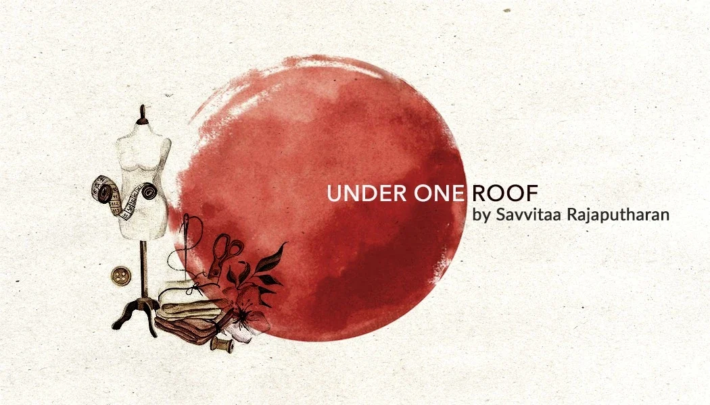

AboutEverything, by hand
Under One Roof began with a simple idea: the things that welcome you home should be made by someone's hands, not by a machine.
Torans have hung over Indian doorways for generations: strips of cloth, leaves and beads that say come in, you're welcome here. Garlands mark the festive days, and jewelry marks the people. We make all three, and we make them the old way, one stitch, one bead, one bend of metal at a time.
Every piece starts on the worktable as a few lengths of thread and a handful of findings. A toran's band is stitched and edged before a single flap is cut. A jhumka is shaped, chased and finished before its fringe goes on. Nothing is printed, moulded or rushed.
That's why no two pieces come out quite the same. A mirror sits a little to the left, one bead is a shade deeper than the next. We think those small differences are the point.
What we hold to
- 01
Made by hand
Every stitch, knot and bend is done by a person at a worktable.
- 02
Small batches
We make a few of each piece at a time, so the hands making it never have to hurry.
- 03
Made to last
Sturdy thread, careful finishing and honest care advice, so your piece stays with you for years.